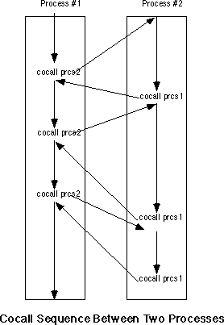
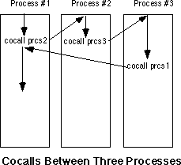

|
Table of Content | Chapter Nineteen
(Part 7) |
|
Table of Content | Chapter Nineteen
(Part 7) |
| CHAPTER NINETEEN: PROCESSES, COROUTINES AND CONCURRENCY (Part 6) |
| 19.3 - Coroutines |
| 19.3 Coroutines |
DOS processes, even when using shared memory, suffer from one primary drawback - each program executes to completion before returning control back to the parent process. While this paradigm is suitable for many applications, it certainly does not suffice for all. A common paradigm is for two programs to swap control of the CPU back and forth while executing. This mechanism, slightly different from the subroutine call and return mechanism, is a coroutine.
Before discussing coroutines, it is probably a good idea to provide a solid definition for the term process. In a nutshell, a process is a program that is executing. A program can exist on the disk; processes exist in memory and have a program stack (with return addresses, etc.) associated with them. If there are multiple processes in memory at one time, each process must have its own program stack.
A cocall operation transfers control between two processes. A cocall is effectively a call and a return instruction all rolled into one operation. From the point of view of the process executing the cocall, the cocall operation is equivalent to a procedure call; from the point of view of the processing being called, the cocall operation is equivalent to a return operation. When the second process cocalls the first, control resumes not at the beginning of the first process, but immediately after the cocall operation. If two processes execute a sequence of mutual cocalls, control will transfer between the two processes in the following fashion:

Cocalls are quite useful for games where the "players" take turns, following different strategies. The first player executes some code to make its first move, then cocalls the second player and allows it to make a move. After the second player makes its move, it cocalls the first process and gives the first player its second move, picking up immediately after its cocall. This transfer of control bounces back and forth until one player wins.
The 80x86 CPUs do not provide a cocall instruction.
However, it is easy to implement cocalls with existing instructions. Even so, there is
little need for you to supply your own cocall mechanism, the UCR Standard Library provides
a cocall package for 8086, 80186, and 80286 processors. This package includes the pcb
(process control block) data structure and three functions you can call: coinit,
cocall, and cocalll.
The pcb structure maintains the current state
of a process. The pcb maintains all the register values and other accounting
information for a process. When a process makes a cocall, it stores the return address for
the cocall in the pcb. Later, when some other process cocalls this process,
the cocall operation simply reloads the registers, include cs:ip, from the pcb
and that returns control to the next instruction after the first process' cocall. The pcb
structure takes the following form:
pcb struct NextProc dword ? ;Link to next PCB (for multitasking). regsp word ? regss word ? regip word ? regcs word ? regax word ? regbx word ? regcx word ? regdx word ? regsi word ? regdi word ? regbp word ? regds word ? reges word ? regflags word ? PrcsID word ? StartingTime dword ? ;Used for multitasking accounting. StartingDate dword ? ;Used for multitasking accounting. CPUTime dword ? ;Used for multitasking accounting.
Four of these fields (as labelled) exist for preemptive multitasking and have no meaning for coroutines. We will discuss preemptive multitasking in the next section.
There are two important things that should be evident from
this structure. First, the main reason the existing Standard Library coroutine support is
limited to 16 bit register is because there is only room for the 16 bit versions of each
of the registers in the pcb. If you want to support the 80386 and later 32
bit register sets, you would need to modify the pcb structure and the code
that saves and restores registers in the pcb.
The second thing that should be evident is that the coroutine code preserves all registers across a cocall. This means you cannot pass information from one process to another in the registers when using a cocall. You will need to pass data between processes in global memory locations. Since coroutines generally exist in the same program, you will not even need to resort to the shared memory techniques. Any variables you declare in your data segment will be visible to all coroutines.
Note, by the way, that a program may contain more than two coroutines. If coroutine one cocalls coroutine two, and coroutine two cocalls coroutine three, and then coroutine three cocalls coroutine one, coroutine one picks up immediately after the cocall it made to coroutine two.

Since a cocall effectively returns to the target coroutine, you might wonder what happens on the first cocall to any process. After all, if that process has not executed any code, there is no "return address" where you can resume execution. This is an easy problem to solve, we need only initialize the return address of such a process to the address of the first instruction to execute in that process.
A similar problem exists for the stack. When a program begins execution, the main program (coroutine one) takes control and uses the stack associated with the entire program. Since each process must have its own stack, where do the other coroutines get their stacks?
The easiest way to initialize the stack and initial address
for a coroutine is to do this when declaring a pcb for a process. Consider
the following pcb variable declaration:
ProcessTwo pcb {0, offset EndStack2, seg EndStack2,
offset StartLoc2, seg StartLoc2}
This definition initializes the NextProc field with NULL
(the Standard Library coroutine functions do not use this field) and initialize the
ss:sp and cs:ip fields with the last address of a stack area (EndStack2)
and the first instruction of the process (StartLoc2). Now all you need to do
is reserve a reasonable amount of stack storage for the process. You can create multiple
stacks in the SHELL.ASM sseg as follows:
sseg segment para stack 'stack' ; Stack for process #2: stk2 byte 1024 dup (?) EndStack2 word ? ; Stack for process #3: stk3 byte 1024 dup (?) EndStack3 word ? ; The primary stack for the main program (process #1) must appear at ; the end of sseg. stk byte 1024 dup (?) sseg ends
There is the question of "how much space should one
reserve for each stack?" This, of course, varies with the application. If you have a
simple application that doesn't use recursion or allocate any local variables on the
stack, you could get by with as little as 256 bytes of stack space for a process. On the
other hand, if you have recursive routines or allocate storage on the stack, you will need
considerably more space. For simple programs, 1-8K stack storage should be sufficient.
Keep in mind that you can allocate a maximum of 64K in the SHELL.ASM sseg. If you need
additional stack space, you will need to up the other stacks in a different segment (they
do not need to be in sseg, it's just a convenient place for them) or you will
need to allocate the stack space differently.
Note that you do not have to allocate the stack space as an
array within your program. You can also allocate stack space dynamically using the
Standard Library malloc call. The following code demonstrates how to set up
an 8K dynamically allocated stack for the pcb variable Process2:
mov cx, 8192
malloc
jc InsufficientRoom
mov Process2.ss, es
mov Process2.sp, di
Setting up the coroutines the main program will call is
pretty easy. However, there is the issue of setting up the pcb for the main
program. You cannot initialize the pcb for the main program the same way you
initialize the pcb for the other processes; it is already running and has
valid cs:ip and ss:sp values. Were you to initialize the main
program's pcb the same way we did for the other processes, the system would
simply restart the main program when you make a cocall back to it. To initialize the pcb
for the main program, you must use the coinit function. The coinit
function expects you to pass it the address of the main program's pcb in the
es:di register pair. It initializes some variables internal to the Standard Library
so the first cocall operation will save the 80x86 machine state in the pcb
you specify by es:di. After the coinit call, you can begin
making cocalls to other processes in your program.
To cocall a coroutine, you use the Standard Library cocall
function. The cocall function call takes two forms. Without any parameters this function
transfers control to the coroutine whose pcb address appears in the es:di
register pair. If the address of a pcb appears in the operand field of this
instruction, cocall transfers control to the specified coroutine (don't
forget, the name of the pcb, not the process, must appear in the operand
field).
|
Table of Content | Chapter Nineteen (Part 7) |
Chapter Nineteen: Processes,
Coroutines and Concurrency (Part 6)
29 SEP 1996